I’ve found that my defining moments in engineering come not from any grand accomplishment – finalizing a prototype, doing well on an exam, or winning a competition, but from the small, almost intimate details of my work. I’ve grown to love engineering during the obsessive hours of computer design or the moment when I’ve realized I need to throw away an idea and start again. As you’ll see throughout my portfolio, my dedication to mechanical engineering is not in one specific industry, but through an exploration of many possible applications of the same scientific process. My goal for my career is to reflect these personal moments in my projects.
I spent Summer 2026 as an HVAC Controls Engineer intern for ATS Critical Facilities on an active construction site data center in Houston. My main work focused on BMS integration, connecting and integrating the site’s mechanical HVAC equipment to a centralized network. My team used environmental sensors and DDC controllers to regulate air and water flow and maintain specific temperature setpoints.
I was able to practice creating controls drawing flow diagrams while onsite. This is a practice drawing I created for a fan coil unit, a simple air conditioning unit that blows air over a water-filled coil.
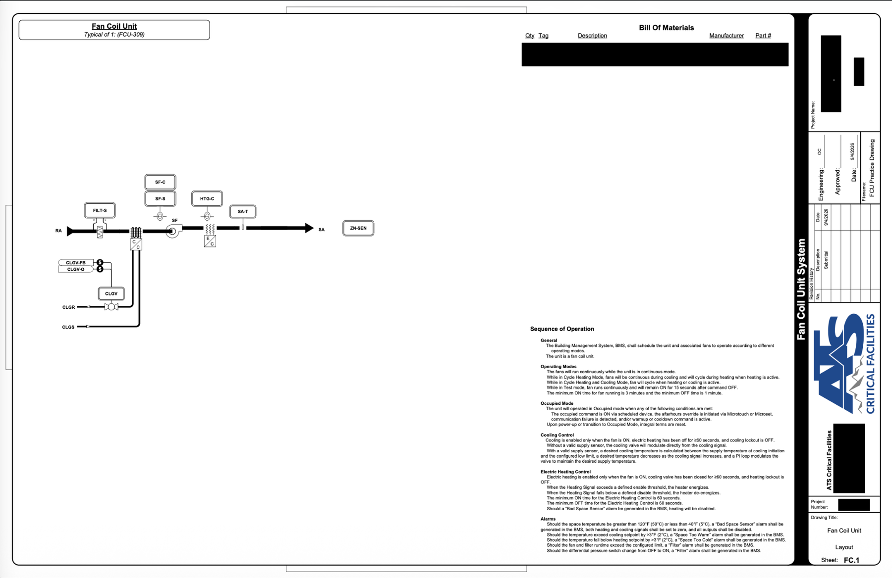
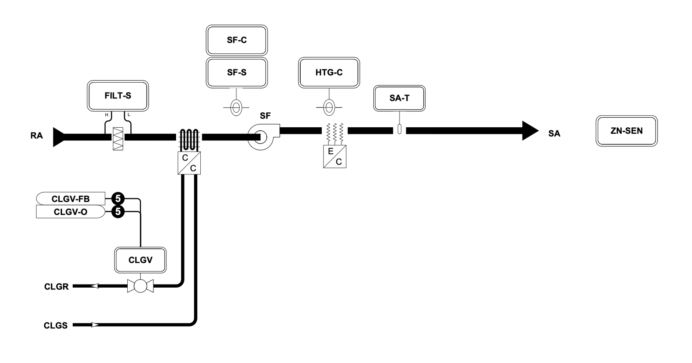
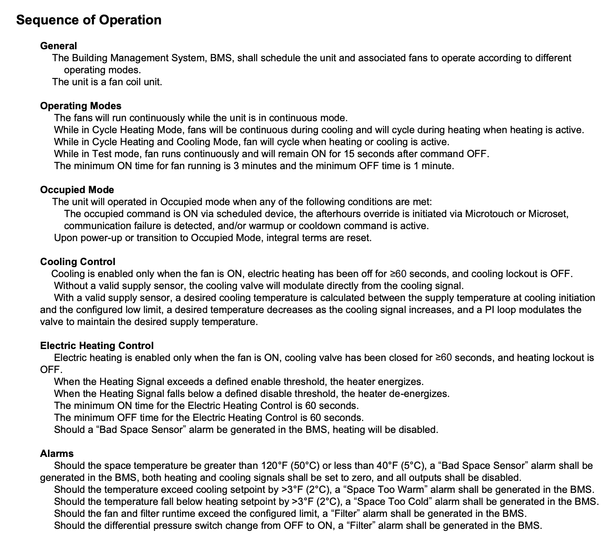
This page follows the fan coil unit system flow. It shows the client what the system is and how it is designed to be operated. I was given a flow diagram of the fan coil unit without any of the setpoints (eg. FILT-S, SF-C).
Each of these setpoints corresponds to a different operation or alarm from the DDC. I wrote the sequence of operations based on requirements that were given to me in written terms from the client, including all operating modes of the fan coil unit, controls protocol for different given scenarios, and alarms that can be activated in the client-controlled BMS system.
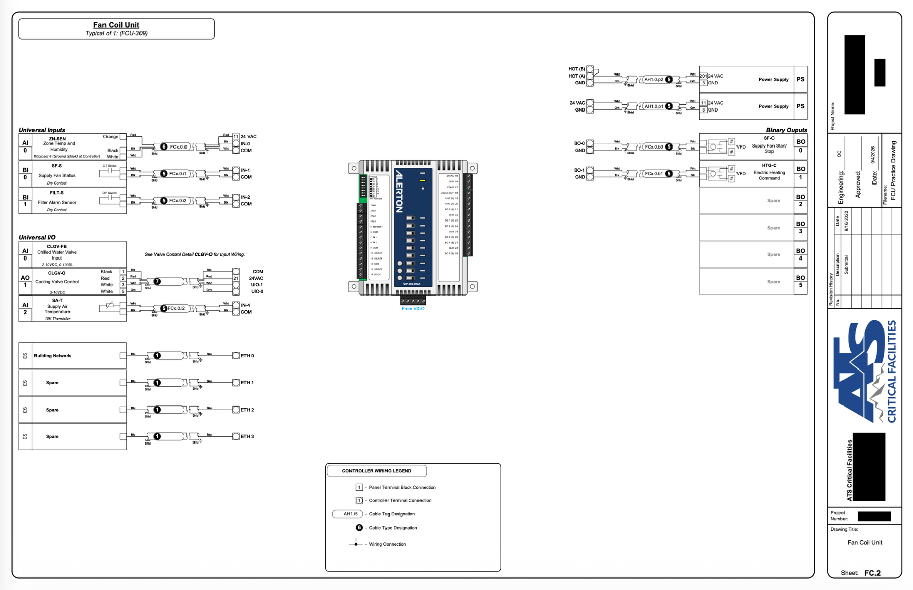
FC.2 details the wiring that connects each setpoint to the data manager. In a data center, visual logic code, corresponding to the sequence of operations and setpoints shown above is uploaded to an Alerton VIP-363-HOA, and then wired directly to the fan coil unit. The inputs on the controller (Supply air temperature, filter alarm status, etc.) correspond to external data that the fan coil unit sensors take in, and the outputs are internal actions from the fan coil unit.
Underneath each input or output, I listed the circuit or controller that would be required for each point. For example, I paired the filter alarm sensor with a dry contact because it acts as a basic pressure sensor, reading the air pressure from each side of the filter and sending a filter alarm if they aren’t equal. My job as an engineer was to integrate each function of the unit in the simplest manner possible and describe it in even simpler terms.
ATS CF Recommendation Letter
I loved my time at ATS for the engineering experience I was able to gain and for the connections I made on the job site. Here is a letter of recommendation from my project manager, Danny Nichols.
Houston Intern – Ms. Chapman
Back in June, we had an intern join the Houston group. To be completely transparent, when I first heard we were getting an intern, I thought to myself, “Great, another person to train right in the middle of an already intense schedule.”
From the moment she hit the ground, she was on the move.
She has taken on obstacles and challenges that even some of our more experienced engineers weren’t sure how to approach. Every problem that has been thrown her way, she has stepped up to with determination, pride, confidence, and a willingness to learn. She doesn’t back away from a challenge—she goes after it.
What impressed me the most is her attitude. She came into a fast-paced and demanding environment and found a way to contribute instead of simply standing on the sidelines and watching. She asks questions, takes initiative, and continues pushing herself to learn more.
Ms. Chapman is going to be a great engineer. I truly believe she has a very bright future ahead of her, and it has been an honor and a pleasure getting the opportunity to work alongside such an impressive young professional.
Keep pushing, Ms. Chapman. You have certainly earned my respect, and I look forward to seeing where your career takes you!
Danny Nichols Project Manager (ATS) 713-657-0266
03
President - Washington Wave
As President of Washington Wave, I like to joke that I’ve moved on to “upper management.” My role involves less technical engineering work and focuses on managing club timelines, holding 1-1 meetings with each subteam lead on their week-by-week meeting structure, coordinating with industry professionals to speak at team meetings – really making sure that every aspect of the club runs smoothly.
So far in my work as President, I’ve run more than 10 summer meetings with leadership, coordinated and led 6 back-to-school outreach events, and worked with my leads to read through 137 applications, ultimately adding 32 new members to our club.
I hold 1-1 meetings with my leads once a quarter, discussing their plan for the quarter, what they want to teach their younger members, their goals for the overall year, and if they feel that each member is fully comfortable and participating in their subteam meetings.
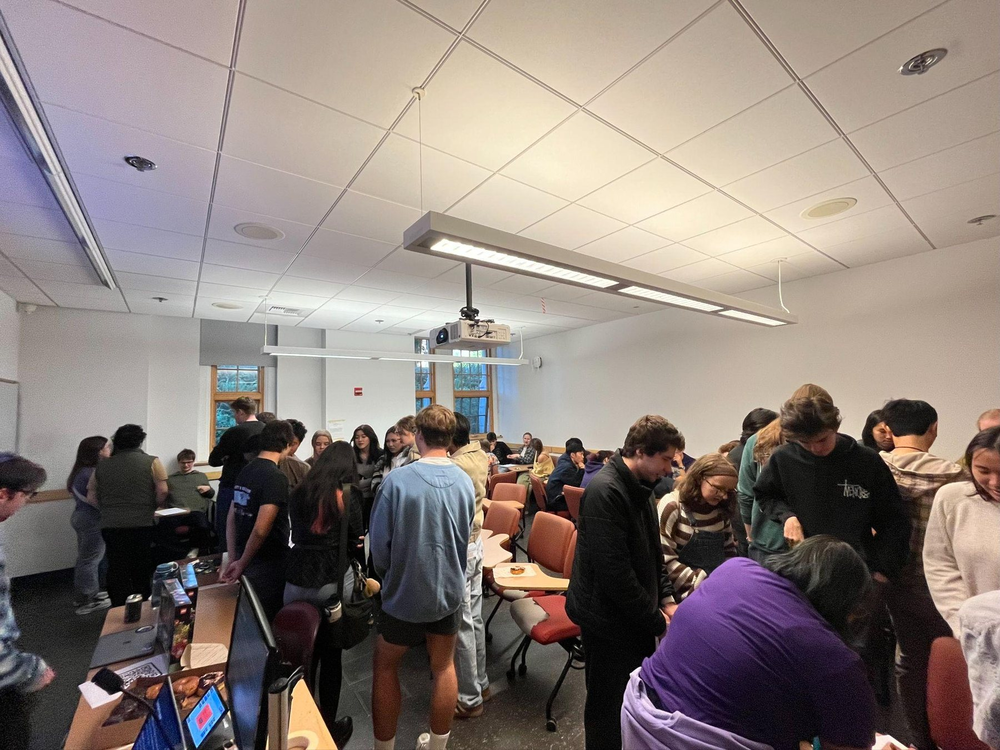
An image from one of my outreach events this year: Legos and Pizza with Washington Wave. We had more than 50 prospective members participate in an activity conceptualizing an energy solution to a fictional, ‘silly’ problem.
Example problem: Citizens of Atlantis don’t want to rely on bioluminescence to see anymore! Design a renewable energy system that provides electricity deep underwater for the city. Explain the system and address real challenges (pressure, corrosion, cost, etc.)
Actuator Lead - Washington Wave
As the Actuator team lead of Washington Wave, I helped direct a team of 8 engineers and took the lead on designing, building, and testing a linear actuator. This actuator functioned as the “waves” for our wave-energy converter prototype, providing input power for a hydraulic cylinder pumping water between two check valves.
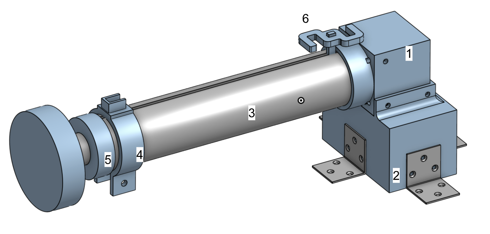
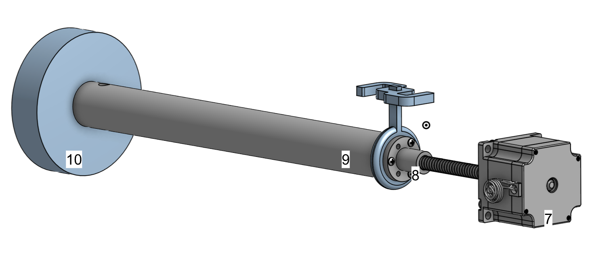
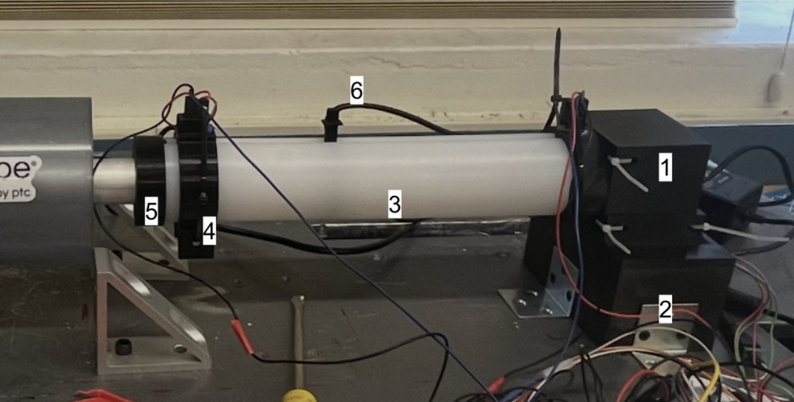
*Limit switch clicker (6) not on system
(1): Motor and drive nut stabilizer housing. This part was designed to fit around the motor with small tolerances, connect the motor to the base-plate box (2), and integrate the drive nut stabilizer housing (3) to the motor. Material: PETG 3D print. Manufactured through 3D printing on Bambu printer.
(2): Base-plate box: Connects motor housing (1) to the base plate. Material: PETG 3D print. Manufactured through 3D printing on Bambu printer.
(3): Drive nut stabilizer housing: Works with drive nut stabilizer (6) to prevent the drive nut from experiencing rotational motion. Material: UHMW Polyethylene. Purchased round tube stock and cut a 1 cm slit through the stock using a table saw.
(4): Limit switch holder: Holds an emergency stop limit switch at the end of the drive nut stabilizer housing (3) to automatically stop movement of the drive nut in case it goes too far along the lead screw. Material: PETG 3D Print. Manufactured through 3D printing on Bambu printer.
(5): End cap: Holds the piston rod inside the drive nut stabilizer housing (3) so the lead screw doesn’t experience any bending moments. Material: PETG 3D Print. Manufactured through 3D printing on Bambu printer.
(6): Drive nut stabilizer and limit switch clicker: Prevents the drive nut from experiencing rotational movement by forcing it to slide along the slit in the drive nut stabilizer housing (3). Materials: PETG 3D Print. Manufactured through 3D printing on Bambu printer.
(7): Motor with attached lead screw: Powers the system. Purchased and unaltered.
(8): Drive nut: Runs along lead screw and creates motion of the piston. Material: Unknown plastic composite. Arrived with the motor (7). Three small holes were drilled into the back face to connect to (6) and (9) using a hand drill.
(9): Piston rod: Provides connection between the drive nut (8) and piston head (10). Material: 6061 Aluminum. Stock was largely left unaltered with the exception of a hole through the rod at the front end to hold a pin connecting the rod to the piston head (10) and 3 tapped holes to connect the rod to the drive nut (8).
(10): Piston head: Pumps water through the hydraulic piston-cylinder. Material: PETG 3D Print. Manufactured through 3D printing on Bambu printer.
Through creating this actuator, I became intimately familiar with the design, build, test, iterate process. Below, I’ve described my design process and difficulties faced throughout the year.
Actuator Design Process
My two major fabrication challenges were tolerancing and part integration. Because the drive nut stabilizer housing (3) was UHMW polyurethane (chosen for minimal shear) – a material that resists adhesives – every mating component required a perfect press fit or mechanical attachment. I discovered a secondary issue when we manufactured the slit in (3) – the plastic deformed inward, reducing the cylinder’s diameter. My team and I resolved this by designing spacers sized to the difference between the deformed and original diameters, which widened the slit and restored (3) to its original geometry. This actually worked in our favor by addressing both problems simultaneously, as restoring the cylinder's shape naturally created the press fit needed for secure part integration.
My team and I had to make a few changes to the actuator design throughout the design process, primarily, the housing model that prevented the rotational motion of the drive nut. We planned to prevent motion by attaching a square piece to the drive nut and integrating that with a rectangular prism housing that would use the edges of the rectangular prism to prevent the drive nut from rotating. However, we realized this design would cause an immense, destructive shear force on the edges of the rectangular prism and work against the force from the motor. We finally opted for a circular housing with only a small piece running through a slit in the housing to prevent rotational motion, minimizing the shear forces on the system as much as possible.
04
Structural Design Engineer - Husky Robotics
I first became exposed to the design, build, test process during my freshman year at Husky Robotics. This club gave me my first foundations in prototyping, using CAD, and designing for manufacturing.
I was a member of the Mobility subteam, helping my team create a rocker-bogie subsystem for our rover’s chassis. I researched and proposed a rocker-bogie subsystem because of its chassis stabilization mechanism that dramatically reduces the angle experienced by the wheels on the main body.
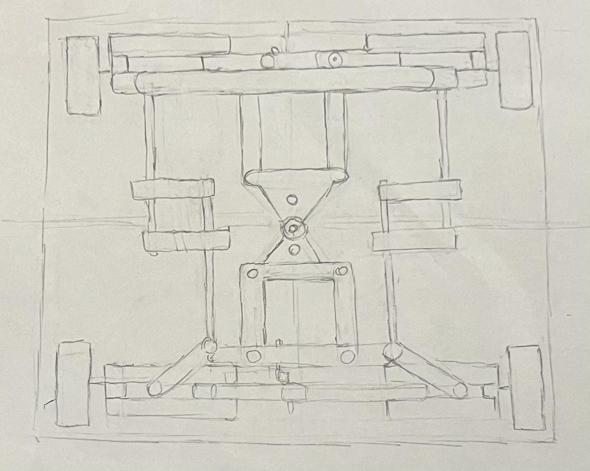
This is my first drawing of our rocker bogie subsystem. We wanted the frame to have four wheels instead of six and rotate around a central differential bar, or joint, connecting each half of the linkage system together.
A simple prototype my team and I made during one of our meetings. We wanted to do an initial test of the rocker-bogie mechanism’s stabilization. While this prototype wasn’t to scale or proportion, we were able to create a proof-of-concept for our idea.
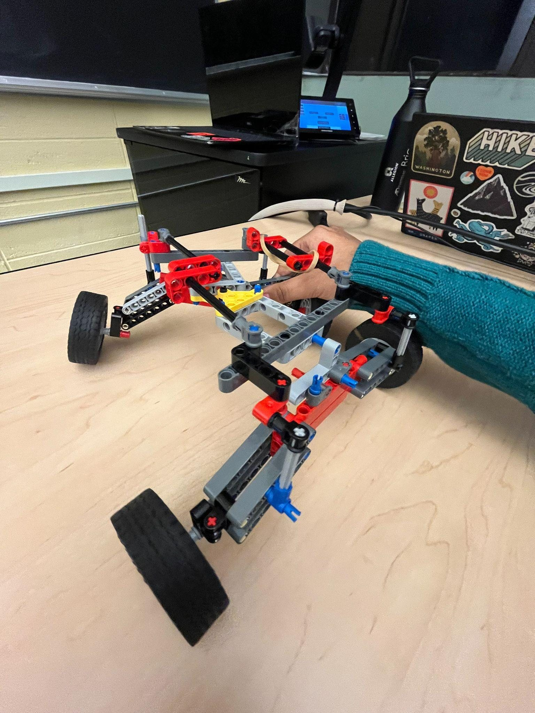
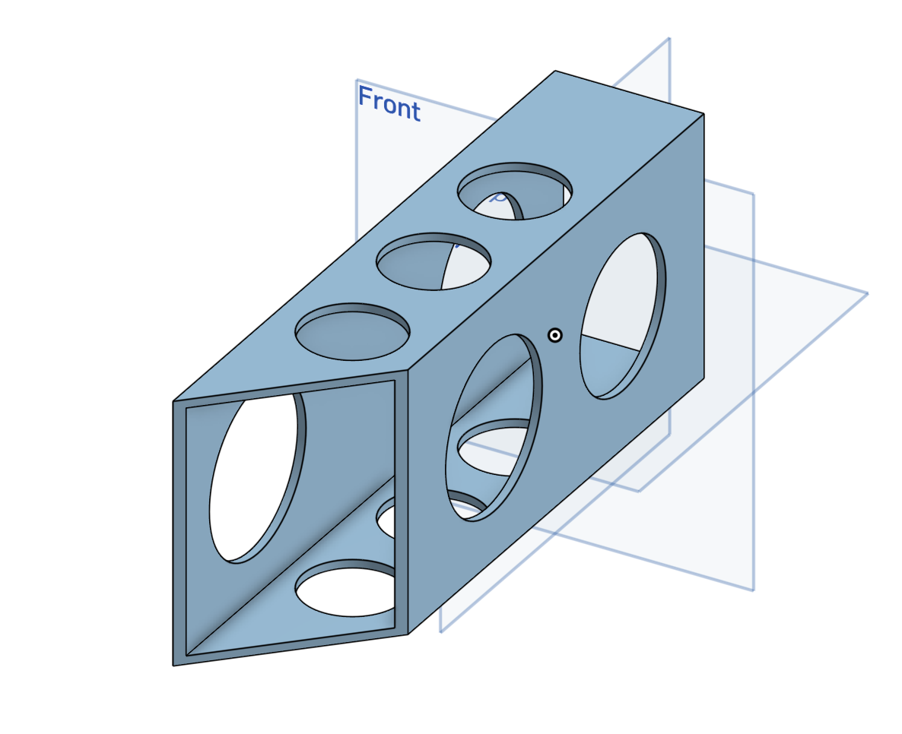
This is one of the parts I designed and modeled. As a freshman, I’d had no experience using CAD or creating assemblies, so through designing 30+ parts for the mobility team I learned the principles of design, metal cheesing, and linkage integration.
The part’s corresponding drawing file. The mobility team worked with our manufacturing team to teach us designing for manufacturing - specifically which parts were most difficult to make in our machine shop, simplifying geometry, and choosing necessary tolerances.
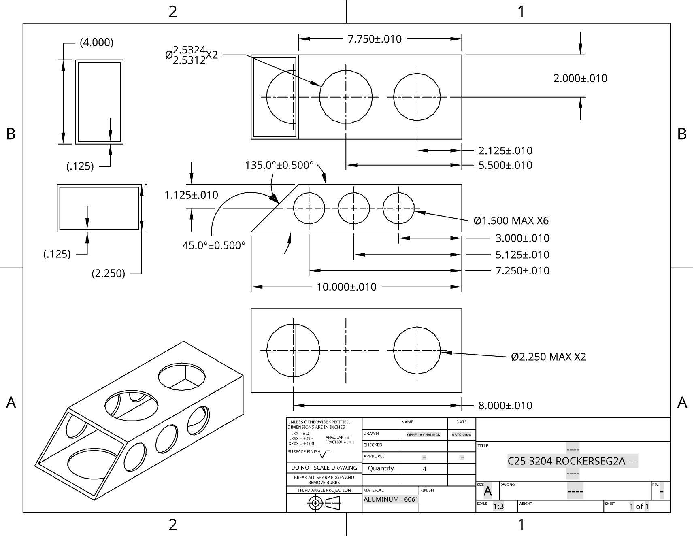
Finally, the assembled product, created in a one-year process. The system was connected through a differential bar, providing stability to the central joint and connecting each side of the system together. Clearance spaces for the wheels are represented in purple.